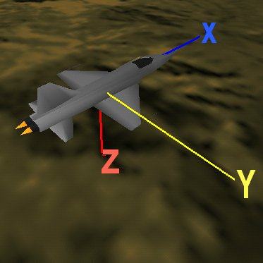
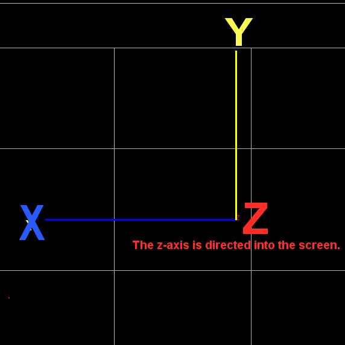

Pacaus/SWARMM Run File
The pac.his run file output by the PACAUS program
has many different formats. The format version documented
here is the current most extensive version of a pac.his
file - VERSION_D.
A pac.his file consists of a header, a waypoints section
and a series of aircraft
lines. For example if there are 6 aircraft in a run that
lasts for 20 seconds, we would have 200 groups of 6 aircraft
lines. The time is recorded in intervals of 0.1 seconds. Therefore
for each 0.1 second interval there will be 6 aircraft lines - one
for each aircraft.
Header
The header is in the following format:
version
comment
comment
models.num_of_types models.types[0]...models.types[models.num_of_types]
numAircraft numSides
| Parameter |
Type |
Description |
| version |
string |
VersionA|B|C|D|E |
| comment |
string |
Information about the data file |
| models.num_of_types |
int |
Number of 3D models to load |
| models.types |
int array |
3D model id number |
Models
The following 3D model id numbers are available:
- Id = 0, F/A-18 Hornet
- Id = 1, F-5
- Id = 2, Short Range Missile
- Id = 3, Missile
- Id = 4, F-16 Falcon
- Id = 5, A-4 Skyhawk
- Id = 6, P-3
- Id = 7, F-111
- Id = 8, Medium Range Missile
Note that the selection of the models affects performance. For example, the P-3 model contains a large
number of polygons and hence takes longer to draw than some of the other simpler models.
A typical model line might look like:
3 0 4 2
This means that there are 3 models to be loaded: 0, 4 and 2. This means the F/A-18, the F-16 and the
Short Range Missile models.
Number of Aircraft and Number of Sides
This line tells XCombat how many aircraft there are in this simulation (it has to be the same
in each time step) and how many sides there are: For example:
6 2
means there are 6 aircraft and 2 sides (side 0 and side 1)
Waypoints
The waypoint section follows the header. It consists of a field
saying how many waypoints there are and then that number of
waypoint lines.
num_wp
side team set type x y
...
<
| Parameter |
Type |
Description |
| num_wp |
int |
Number of waypoints in this run |
| side |
short int |
Which side is the waypoint for? |
| team |
short int |
Which team is the waypoint for? |
| set |
short int |
Which set is the waypoint in |
| type |
short int |
Normal, Target or Cap |
| x |
float |
x coord of waypoint |
| y |
float |
y coord of waypoint |
XCOMBAT Coordinate System
The figure below shows the coordinate system used by XCombat.
When the program starts up, the X axis points to the left of the screen, the Y axis points up and
the Z axis points into the screen.
The two figures below show the axis conventions with screenshots from XCombat.


Aircraft Line
The different parameters on each aircraft line
described below.
| Parameter |
Type |
Description |
| time |
long int |
Current run time (in units of 10x seconds, in 0.1 second intervals) |
| mfly |
short int |
Number of missiles in flight |
| deadflag |
short int |
Aircraft dead(1) or alive(0) |
| ac_ident |
short int |
Aircraft Number/Identification |
| side |
short int |
Friend (1) or foe (2) |
| x |
float |
Aircraft's x coordinate (feet) |
| y |
float |
Aircraft's y coordinate (feet) |
| z |
float |
Aircraft's z coordinate (feet) |
| psi |
short int |
Aircraft rotation about its Z axis (10x deg) |
| theta |
short int |
Aircraft rotation about its Y axis (10x deg) |
| phi |
short int |
Aircraft rotation about its X axis (10x deg) |
| alpha |
short int |
Aircraft Angle of Attack (10x deg) |
| mach |
short int |
Mach Number |
| throt |
short int |
Throttle Position |
| eta |
short int |
G Loading |
| actype |
short int |
Aircraft type |
| nFlares |
short int |
Number of flares currently out |
| Beamel |
long int |
Radar Beam Elevation (100x deg) |
| Beamaz |
long int |
Radar Beam Azimuth (100x deg) |
| hscan |
long int |
Radar Horizontal Scan (100x deg) |
| vscan |
long int |
Radar Vertical Scan (100x deg) |
| Rrange |
long int |
Radar Range (feet) |
| inst_bm_az |
long int |
Radar Instantaneous Azimuth (100x deg) |
| inst_bm_el |
long int |
Radar Beam Elevation (100x deg) |
| beam_height |
long int |
Instantaneous Radar Beam Height (100x deg) |
| beam_width |
long int |
Instantaneous Radar Beam Width (100x deg) |
| clutter.x_patch_1 |
float |
x coordinate of clutter patch 1 |
| clutter.y_patch_1 |
float |
y coordinate of clutter patch 1 |
| clutter.x_patch_2 |
float |
x coordinate of clutter patch 2 |
| clutter.y_patch_2 |
float |
y coordinate of clutter patch 2 |
| clutter.area_1 |
float |
Area of clutter patch 1 |
| clutter.area_2 |
float |
area of clutter patch 2 |
| clutter.lobe_1 |
float |
lobe type 1 |
| clutter.lobe_2 |
float |
lobe type 2 |
| clutter.patch_prf |
float |
patch prf |
| comque |
string |
see below |
Comque
Comque is a string of 20 characters. Each character is either
'0' or '1'. Each position in the string is used to set a number
of display parameters in the graphics. Only the first 12
positions are used at this stage. If the value is '1' the parameter is ON
and if it is '0' it is OFF. The different parameters and their
positions in the string are:
BARRAGE_JAMMING 0
SMART_NOISE_JAMING 1
DECEPTIVE_JAMING 2
JAMMED_RANGE_DENIAL 3
JAMMED_VELOCITY_DENIAL 4
JAMMED_BEARING_DENIAL 5
JAMMED_STT_DENIAL 6
RADAR_DETECTED 7
RWR_DETECT 8
LOW_PRF 9
MEDIUM_PRF 10
HIGH_PRF 11
Missile Line
Each missile line is in the following format:
missileId x y z psi theta phi mtype
| Parameter |
Type |
Description |
| missile id |
int |
The unique id of the missile |
| x |
float |
x coord (feet) |
| y |
float |
y coord (feet) |
| z |
float |
z coord (feet) |
| psi |
short int |
angle around y (10x deg) |
| theta |
short int |
angle around z (10x deg) |
| phi |
short int |
angle around x (10x deg) |
| mtype |
string |
Missile Type |
Flare Line
Each flare line is in the following format:
x y z
| Parameter |
Type |
Description |
| x |
float |
x coord (feet) |
| y |
float |
y coord (feet) |
| z |
float |
z coord (feet) |
|